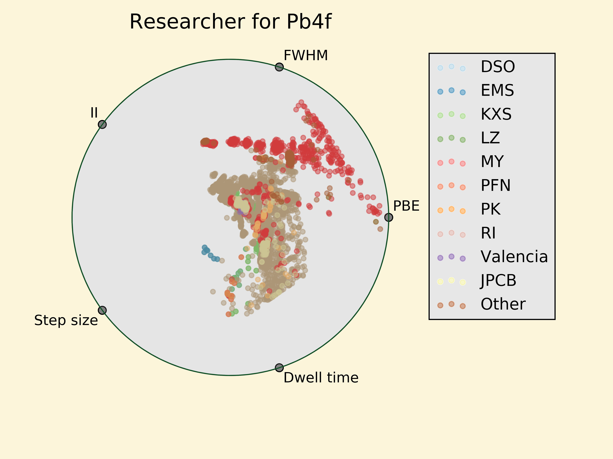
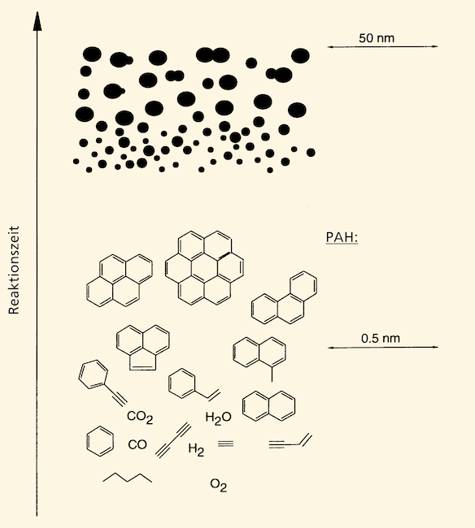
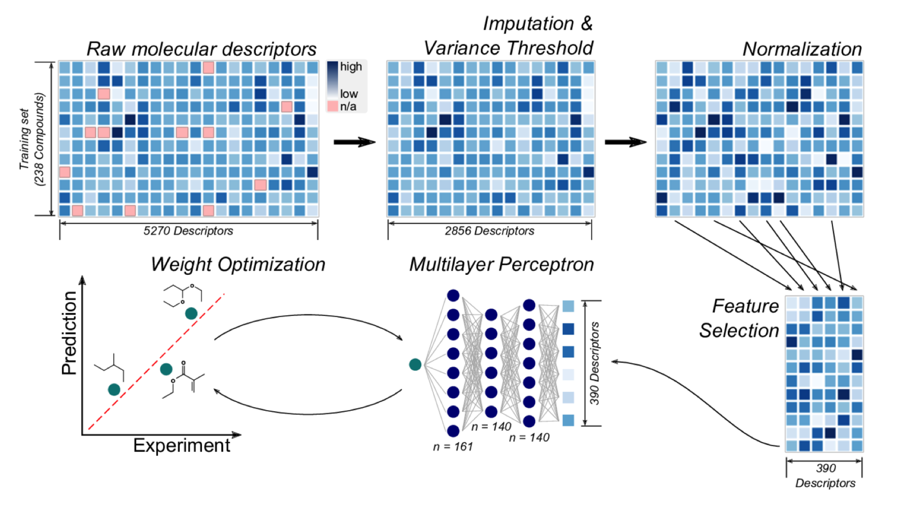

NREL Internship Review
Paul Kairys
July 2017
Personal Background

- I was born and raised there
- I went to school there
- I am attempting to never go back there
- B.Sc. Chemical Engineering
- Undergraduate research focused on finite element simulations and digital signal processing
- Programming in COMSOL(FEM software in Java), Matlab, Python, Julia
- Senior year I postponed graduation to come to NREL and do cool stuff
Internship #1 : SULI
Halide perovskite Solar Cell Team
- Part of the MCST and Interfacial and Surface Sciences Group
- Mentors were Joe Berry (PI) and Philip Schulz (post-doc)
- Chosen because I was interested in materials and could use python
- Also chosen because they waited until the last minute
Intro to Perovskite Solar Cells
- Efficient ✔
- Cheap to make ✔
- Even a little stable ùôì
- Consistent Properties ùôì
- ABX3 structure
- A : MA, FA, Cs, Rb
- B : Pb, Sn
- X : I, Cl, Br
ABX3 Cubic Crystal

How to get a better understanding of these materials?
X-ray Photoemission Spectroscopy

XPS:
- Pros:
- Quantitative surface analysis technique
- Probes core electrons 0-10 nm deep
- Provides information about electronic and chemical environment at the surface
- Provides extremely useful info on charge transfer dynamics at the surface of a material
XPS:
- Cons:
- Typically slow (hrs for single core level scan)
- Subjective Analysis
- Perovskites tend to fall apart under normal sunlight (X-rays hurt)
My Project
- Enable high-throughput photoemission studies with high fidelity
- Requires automated analysis and quantified error
- Build materials database and perform bulk analysis
- Requires experimentalists to keep their files organized and/or consistent
Results
At high throughput, the electronic information provided by XPS is limited. But it works very well for chemical composition and material classification.
- There are very clear trends to see when bulk analysis is performed.
- Only able to perform qualitative analysis due to time constraints


Bonus Picture
Internship #2 : RPP
Computational Modeling - Biomolecular Sciences
- Worked primarily with Yannick Bomble (PI#1), Seonah Kim (PI#2), and Peter St. John (post-doc)
- Research primarily focuses on computational biology and chemistry
Project 1:
Modeling/Predicting Soot Formation Chemistry
Soot Background
- Soot is a collection nano-scale particles made of polycyclic aromatic hydrocarbons
- Soot formation exacerbated by the presence of specific precursors during combustion
- Controlling soot formation is critical when designing new fuels from biomass
- Metrics like the Yield Sooting Index (YSI) describe a molecule's propensity to create soot during combustion

How to predict which fuels make the most soot?
Use statistical models!
- An artificial neural net (ANN) takes an array of inputs to predict some number
- It is like fitting a curve, except in a very non-linear and high-dimensional space
- When used for chemistry/biology this is called a Quantitative Structure Activity Relationship (QSAR)
- So what are the inputs? --> molecular descriptors
- Number of double bonds
- Number of aromatic rings
- ~5000 descriptors

Outliers
- Every statistical model has them
- Indicative that the outlier's chemistry/physics is not fully "caught" by the model
- Something interesting might be happening
- One particular outlier comes from the group of cycloalkenes

Results
- A model that can accurately predict a molecule's propensity to create soot
- Chemical insights
- A paper
Project 2:
Cellulase Enzyme Dynamics and Characterization
Enzyme Background
- Cellulase Enzymes "eat" ... Cellulose
- Understanding how their structure changes is critical to engineering and optimization of these macromolecules.
- One way to characterize these proteins is with Small Angle X-ray (or Neutron) Scattering
Results + Conclusion
- We had really bad data --> No real results
- I got to go to Brookhaven National Laboratory to run experiments at their synchrotron